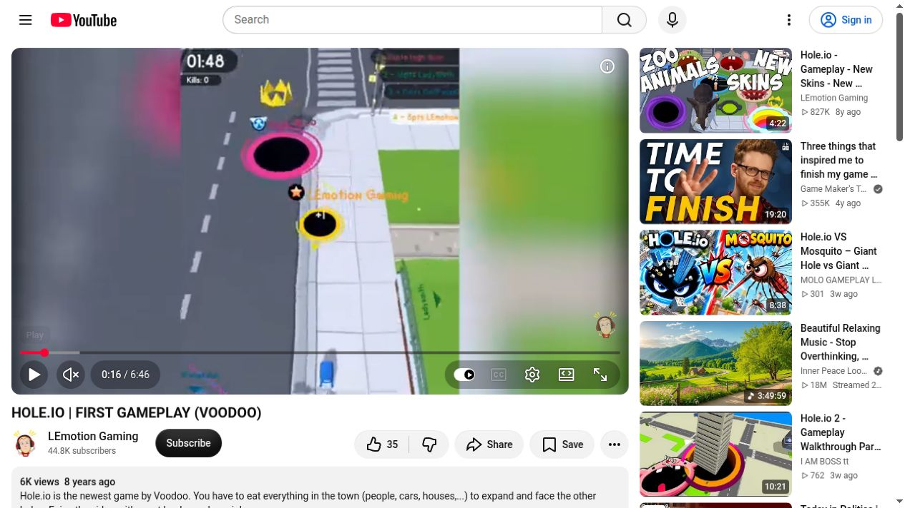
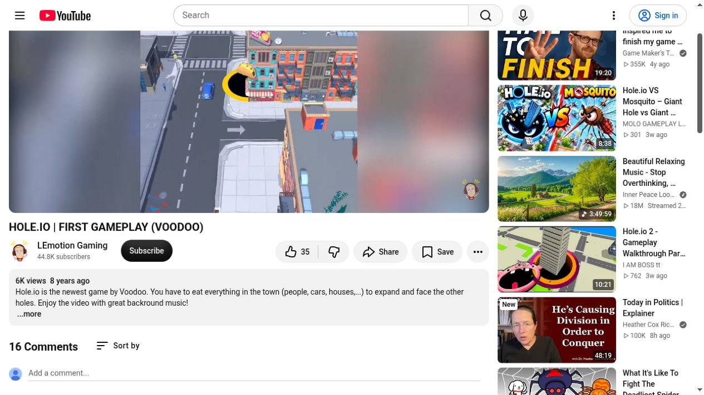

The design principle: players form a hypothesis, act, and read the result. A swallowed item, an unsuccessful push, a spill, and a frightened character should each respond consistently. Keep the existing hold-to-steer control and three-to-five-minute world target.
Gabe Newell’s formulation emphasizes recognizing and responding to player choices. See the reported Valve discussion. The proposals below are our design recommendations, not claims about features in Hole.io.
| Element | Player expectation → response | Implementation and success check |
|---|---|---|
| 1. Tipping and resistance | “I am under its edge.” Eligible objects lean toward the hole, then fall. Oversized objects give a small anchored wobble and low thud; barriers remain fixed. | Visual-only lean before capture, no collider drift. Begin reaction within one rendered frame. Maintain exact-once scoring; no permanent highlighting. |
| 2. Spillable containers | “That crate holds food.” Nudging it spills a few separate edible items. Eating a table drops its food; taking one support makes a stack settle. | Pre-budget contents instead of spawning free points. Cap active debris; settle back to sleeping objects. Test that new routes still finish in 3–5 minutes. |
| 3. Herding as a choice | “Approaching from this side drives them that way.” People pause, turn, then flee at the existing double speed. Animals scatter with readable reactions. | Use current crowd simulation and its work limits. No per-agent global path search. Reward positioning without animals escaping forever or crossing barriers. |
| 4. Satisfying meal feedback | “I ate a lot at once.” One rising audio phrase, a brief rim ripple, and a combined +points label acknowledge the sweep. | Pool effects, group score labels, cap simultaneous sounds. Keep movement responsive; no forced hit-stop or camera shake. Sound defaults remain user-controllable. |
| 5. Meaningful shortcuts | “Now I can fit that cart.” Eating a previously blocking movable object opens a shorter route to a dense food cluster. | Use deliberate block layouts and consistent size thresholds. Permanent map barriers remain non-consumable. Telegraph the shortcut through layout, not glowing object outlines. |
| 6. Optional neighborhood goals | “I cleaned this picnic / street / market.” A small completion stamp and sound acknowledge a coherent group. | Cosmetic satisfaction first; avoid score multipliers that break pacing. Track group completion without adding HUD clutter or mandatory detours. |
The current pacing pass banks earned points and smooths size growth. That prevents abrupt jumps but can separate the meal from its expected result. Show banked growth distinctly in the meter and deliver immediate visual/audio acknowledgment. Compare against a version paced primarily through point costs and food layout. Keep the measured world-duration target; do not silently add more time gates.
I captured screenshots from LEmotion Gaming’s 2018 Hole.io gameplay and inspected Voodoo’s official page. These are historical gameplay references, not a claim about the latest release. The useful principles are the continuous high-contrast hole rim, uncluttered road surfaces, repeated building window rhythms, bright accents against neutral streets, and visible tipping that connects contact to disappearance. Match those principles with original assets.


Reference captures retain source context. Hole.io and the gameplay footage belong to their respective owners. They are reference material, not game assets.
Open the interactive 3D preview. Car: softened body edges, smooth dark glass, separated lamps and handles. Building: original brick texture, raised cream frames and sills, cornice, roof equipment and striped storefront awning. Props: dumpster lid, ribs and wheels; wooden crate, loose food and small tray.
The preview offers orbit, zoom, rotation and current-model comparison. The embedded test browser uses the software renderer: textured geometry is verified there with a dedicated depth-buffered preview renderer, but specular reflections need WebGL for full material inspection. Separate swatches show the actual proposed texture patterns even in software mode. Proposed materials are shared, 128px procedural textures; there is no bloom or full-screen post-processing. Geometry is review quality and still needs instancing/LOD profiling before mass deployment.
Keep immediate steering, use frame-rate-independent damping for camera changes, retain the rainbow rim with a subtle inner lip, group point feedback, and use simple contact shadows under nearby objects. Avoid an extra camera lag that makes the hole feel sluggish. Judge the assets from the actual gameplay zoom before increasing detail counts.